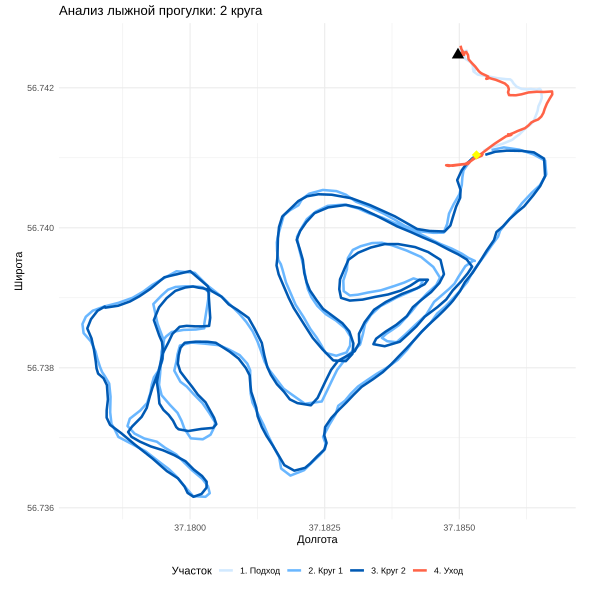

Linking to GEOS 3.13.1, GDAL 3.11.4, PROJ 9.7.0; sf_use_s2() is TRUE── Attaching core tidyverse packages ────────────────────────────────────────────── tidyverse 2.0.0 ──
✔ dplyr 1.2.0 ✔ readr 2.2.0
✔ forcats 1.0.1 ✔ stringr 1.6.0
✔ ggplot2 4.0.2 ✔ tibble 3.3.1
✔ lubridate 1.9.5 ✔ tidyr 1.3.2
✔ purrr 1.2.1 ── Conflicts ──────────────────────────────────────────────────────────────── tidyverse_conflicts() ──
✖ dplyr::filter() masks stats::filter()
✖ dplyr::lag() masks stats::lag()
ℹ Use the conflicted package (library(geosphere)
library(lubridate)
library(ggplot2)
file_path <- "../../../data/2022-01-09_14-00_Sun.gpx"
file.exists(file_path)[1] TRUEReading layer `track_points' from data source `C:\platt\education\sevinGIS\data\2022-01-09_14-00_Sun.gpx' using driver `GPX'
Simple feature collection with 835 features and 26 fields
Geometry type: POINT
Dimension: XY
Bounding box: xmin: 37.178 ymin: 56.73616 xmax: 37.18673 ymax: 56.7426
Geodetic CRS: WGS 84track <- points %>%
mutate(
lon = st_coordinates(.)[,1],
lat = st_coordinates(.)[,2],
time = with_tz(as_datetime(time), tzone = "Europe/Moscow")
) %>%
st_drop_geometry() %>%
mutate(
dist_diff = c(0, distHaversine(cbind(lon[-n()], lat[-n()]), cbind(lon[-1], lat[-1]))),
time_diff = c(0, as.numeric(diff(time))),
speed_kmh = ifelse(time_diff > 0, (dist_diff / time_diff) * 3.6, 0),
cum_dist = cumsum(dist_diff)
)
base_coord <- c(track$lon[1], track$lat[1])
track <- track %>% mutate(dist_from_base = distHaversine(cbind(lon, lat), base_coord))
gate_info <- track %>% slice(98)
gate_coord <- c(gate_info$lon, gate_info$lat)
track <- track %>% mutate(dist_to_gate = distHaversine(cbind(lon, lat), gate_coord))
gate_hits_indices <- which(track$dist_to_gate < 10)
real_hits <- c()
if(length(gate_hits_indices) > 0) {
real_hits <- gate_hits_indices[1]
for(i in 2:length(gate_hits_indices)) {
last_hit_dist <- track$cum_dist[tail(real_hits, 1)]
current_dist <- track$cum_dist[gate_hits_indices[i]]
if(current_dist - last_hit_dist > 500) {
real_hits <- c(real_hits, gate_hits_indices[i])
}
}
}
track <- track %>%
mutate(segment_name = case_when(
row_number() < real_hits[1] ~ "1. Подход",
row_number() >= real_hits[1] & row_number() < real_hits[2] ~ "2. Круг 1",
row_number() >= real_hits[2] & row_number() < real_hits[3] ~ "3. Круг 2",
row_number() >= real_hits[3] ~ "4. Уход",
TRUE ~ "4. Уход"
))
final_stats <- track %>%
group_by(segment_name) %>%
summarise(
Start_Time = min(time),
End_Time = max(time),
Distance_m = round(sum(dist_diff), 0),
Avg_Speed_kmh = round(mean(speed_kmh, na.rm = TRUE), 2),
Duration = paste0(sum(time_diff) %/% 60, " мин ", round(sum(time_diff) %% 60), " сек"),
Irregularity = round(sd(speed_kmh, na.rm = TRUE) / mean(speed_kmh, na.rm = TRUE), 3)
)
max_away <- max(track$dist_from_base)
print("--- СТАТИСТИКА ПО УЧАСТКАМ ---")[1] "--- СТАТИСТИКА ПО УЧАСТКАМ ---"# A tibble: 4 × 7
segment_name Start_Time End_Time Distance_m Avg_Speed_kmh Duration Irregularity
1 1. Подход 2022-01-09 14:00:18 2022-01-09 14:09:14 295 2.02 8 мин 56 сек 1.20
2 2. Круг 1 2022-01-09 14:09:20 2022-01-09 14:36:09 4482 10.0 26 мин 55 сек 0.278
3 3. Круг 2 2022-01-09 14:36:14 2022-01-09 15:02:45 4520 10.2 26 мин 36 сек 0.288
4 4. Уход 2022-01-09 15:02:51 2022-01-09 15:16:08 432 1.99 13 мин 23 сек 1.08
Максимальное удаление от базы: 764 метровggplot(track, aes(x = lon, y = lat, color = segment_name)) +
geom_path(linewidth = 1.2) +
annotate("point", x = base_coord[1], y = base_coord[2],
color = "black", size = 4, shape = 17) +
annotate("point", x = gate_coord[1], y = gate_coord[2],
color = "yellow", size = 4, shape = 18) +
coord_fixed(ratio = 1.3) +
scale_color_manual(values = c(
"1. Подход" = "#D1E9FF",
"2. Круг 1" = "#6AB7FF",
"3. Круг 2" = "#0059B3",
"4. Уход" = "#FF6347"
)) +
labs(
title = "Анализ лыжной прогулки: 2 круга",
x = "Долгота", y = "Широта", color = "Участок"
) +
theme_minimal() +
theme(legend.position = "bottom")